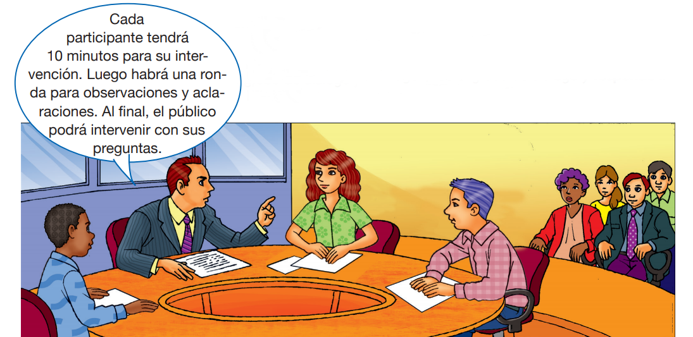

Reflexiono para avanzar
Alumno:
Reflexiono para avanzar
Alumno:
Observa la siguiente imagen, lee el globo de diálogo y responde las preguntas.
• ¿Por qué son importantes las pautas que se señalan en el gráfico para llevar a cabo una discusión? ¿Qué podría suceder si no se explican las pautas antes de empezar una discusión?
• ¿Por qué crees que hay un público presente durante la discusión?
 Comprendo para saber
Comprendo para saber
La mesa redonda es una modalidad de discusión programada en la que, generalmente, participan personas expertas en el tema a tratar. Los participantes utilizan un lenguaje formal y palabras propias del área del conocimiento que se trata. Además, cuenta con un público interesado en el tema.
En una mesa redonda intervienen personas con diferentes funciones que cumplen reglas previamente convenidas.
|
¿Quiénes intervienen en la mesa redonda y cuáles son sus funciones? |
|||
|
Participantes o panelistas
|
Moderador
|
Relator
|
Público
|
|
Reglas de la mesa redonda |
|||
|
Cada participación tiene un tiempo establecido previamente. |
Se establece un orden en las intervenciones. Puede ser por sorteo. |
Los participantes deben esperar a que el moderador les ceda la palabra. |
El público debe esperar su turno para presentar preguntas. |